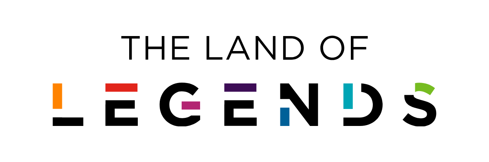

KABLOSUZ EKRAN VE SUNUM MERKEZİ
Telefonunuzdan, tabletinizden veya bilgisayarınızdan anında bağlanarak ekranınızı yansıtın.
EŞLEŞTİRME KODU
--- ---
1
Telefon veya bilgisayarınızda cast.homaklab.com adresini açın.
2
Yukarıda görünen 6 haneli PIN kodunu girin.
3
Ekranınız, slaytınız veya kameranız 60 FPS ultra akıcı canlı yayınlansın.
Alıcı Çevrimiçi
⚡ 60 FPS Düşük Gecikme
🔀 Çoklu Ekran (1-4 Cihaz)
HIZLI BAĞLANTI (QR)